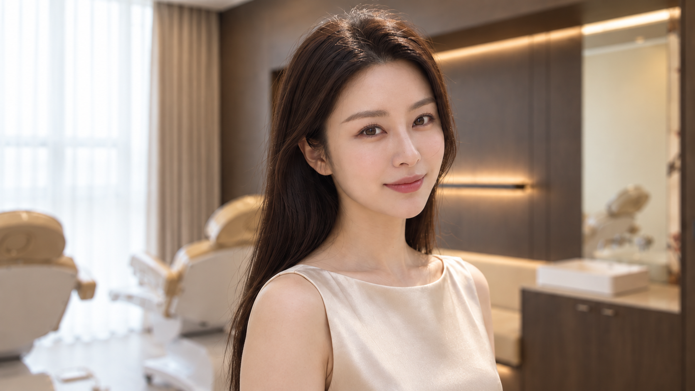
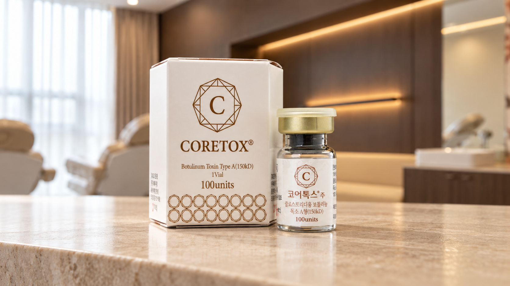
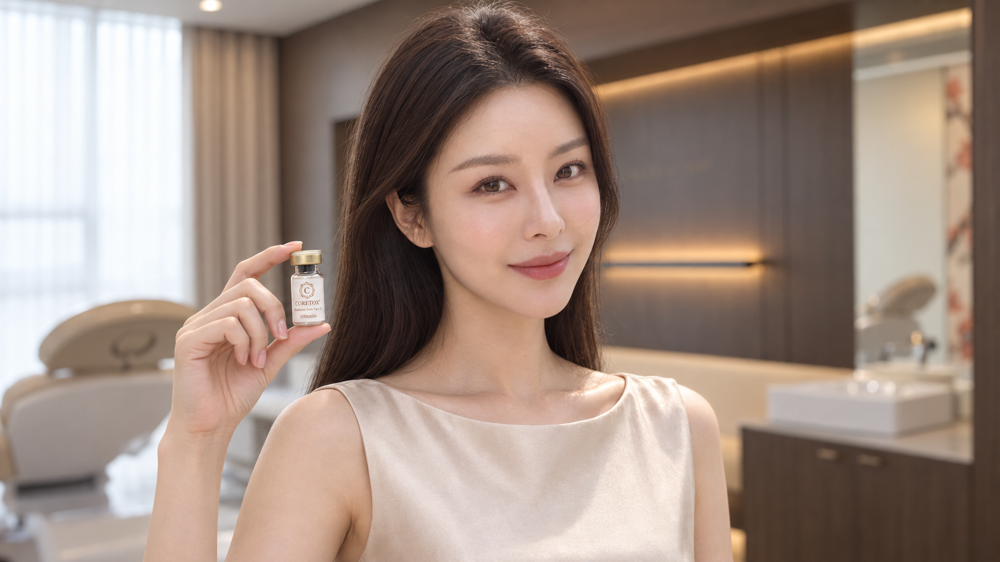
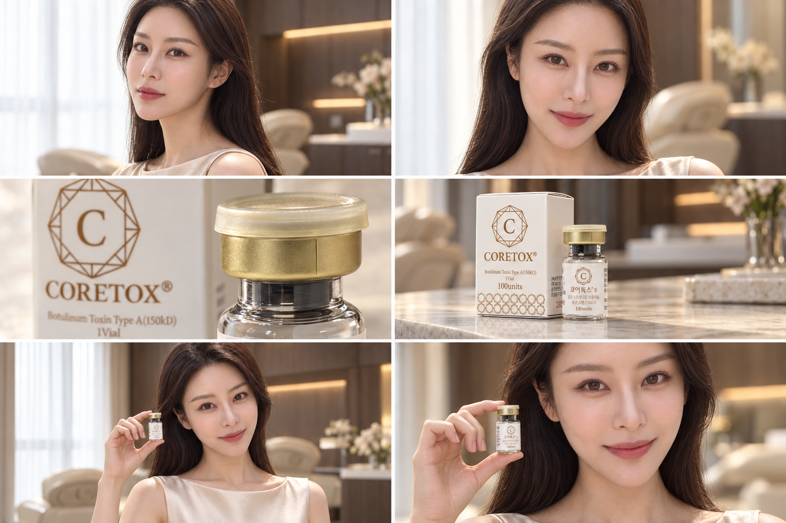

PORTRAIT REVEAL
얼굴을 따라 흐르는 시선
완만한 옆 이동과 회전으로 얼굴, 머릿결, 공간의 깊이를 보여줍니다.
BEAUTY BLOSSOM
HERO FILM · DESIGN REVIEW
우리 모델 사진과 원내 배경을 바탕으로 구성한 코어톡스 히어로 영상 시안입니다.
01 — CAMERA & SEQUENCE

PORTRAIT REVEAL
완만한 옆 이동과 회전으로 얼굴, 머릿결, 공간의 깊이를 보여줍니다.

PRODUCT DETAIL
제품을 향해 가까워지며 금속 캡과 유리, 종이의 질감을 연결합니다.

PORTRAIT & PRODUCT
안정된 손과 시선, 작은 표정 변화를 담은 클로즈업으로 마무리합니다.
02 — VISUAL STORYBOARD

03 — CHARACTER SHEET
모델 폴더의 동일 인물을 기준으로 얼굴·헤어·의상·표정을 정리했습니다.